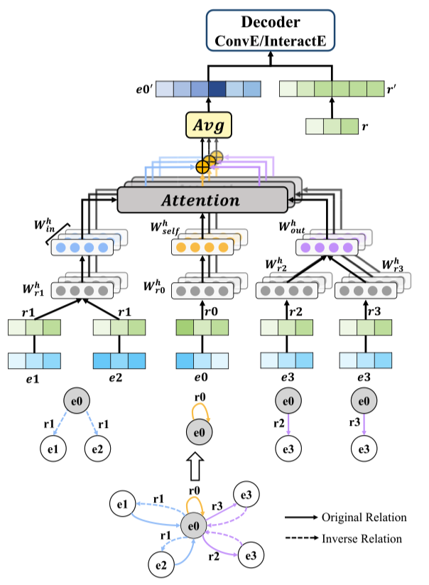

RAGAT:基于自适应的注意力机制的KGC框架
本文最后更新于：1 小时前
贡献
本文提出了一种基于GAT的方法，即引入关系特定的网络参数，自适应地从不同关系下的相邻实体中学习信息。
作者在现有消息函数message function(Message Function: 解释为模型获取实体和关系之间交互的信息的方法, 具体查看下方表格)的基础上实现了与关系特定参数集成的RAGAT。此外，我们提出了一个新的消息函数来学习交互嵌入，其中提供了一个直观的解释。
RAGAT模型
模型整体框架如图所示：
- RAGAT首先将相同关系分组的实体嵌入和关系嵌入结合起来，生成关系-实体隐藏嵌入。然后，使用全图共享的权重矩阵将关系实体嵌入转换为消息(Message)。
- 采用具有不同学习网络参数的多头注意对消息进行聚合，使模型能够联合关注来自不同表示子空间的信息。在这两个阶段之后，可以更新每个实体的表示。

其中给定的图，实体和关系的集合可以如下表示：
其中$\mathcal{R}_{\text {inv }}=\left{r^{-1} \mid r \in \mathcal{R}\right}$ and $\top$分别表示逆关系和自循环关系。
我们利用消息函数来表示如何从邻近节点和边学习信息。如果实体u与实体v通过关系r连接，那么它们的分布表示组合为
$\phi(\cdot)$用来将实体表示和关系表示进行组合。之后学习在整个图上共享的网络参数$\boldsymbol{\theta}_{g}$来生成消息message：
这里消息函数生成的$\mathbf{m}{(u, r, v)}$表示的就是从实体$u$到$v$传递的信息，其中$\boldsymbol{\theta}{g}$在不同位置和局部结构上共享，可以过滤出不同拓扑结构上的共同特征。当实体与不同的关系相连时，它对中心实体$v$起不同的作用。根据这种推断，作者提出了关系感知图注意网络RAGAT。具体来说，RAGAT定义了用关系特定的网络参数$\boldsymbol{\theta}_{r}$参数化的关系感知消息函数，如下所示：

其中$\boldsymbol{\theta}{r}$用于提取关系特有特征。将相邻实体表示和关系表示分组，并送入不同的消息函数中。获得$\boldsymbol{\theta}{r}$最直观的方法是为每个关系学习一个独立的权矩阵。考虑到采用不同的编码器和解码器进行实验，将$\boldsymbol{\theta}_{r}$限制为对角矩阵以降低计算复杂度:
由于原始关系、逆关系和自循环关系是三种不同方向的边，我们为每一种边定义了单独的滤波器:
其中$\mathbf{W}{d i r(r)} \in \mathbb{R}^{d{1}} \times \mathbb{R}^{d_{0}}$定义如下：
基于注意力机制的信息聚合器
使用注意力机制对中心实体v的领域实体和关系进行聚合的方法如下：
其中f是一个非线性的激活函数。注意力系数$\alpha_{u, r}$定义为：
本文的方法采用的注意力机制是一个由加权矩阵$\mathbf{W}{a t t} \in \mathbb{R}^{1 \times d{1}}$参数化并应用LeakyReLU非线性的单层前馈神经网络。
本文采用了多头注意，使模型能够联合关注来自不同关系参数子空间的信息。现在，最终嵌入注意头h中的信息计算为：
考虑到参数的大小，我们对M个独立注意头采用平均而不是串联的方法，从而得到实体v的输出表示如下：
其中函数$f$代表$tanh$激活函数。此外，最后对关系嵌入进行了变换，使关系嵌入具有统一的嵌入大小为$\mathbf{e}_{v}^{\prime}$。
其中$\mathbf{W}{r e l} \in \mathbb{R}^{d{1} \times d_{0}}$是一个可学习的权重矩阵，它将关系投射到相同的嵌入空间作为实体。
解码器
可以在模型架构图中看出，本文使用了两种不同的解码器来验证模型的有效性，这两种解码器分别是ConvE和InteractE。给定一个三元组(s,r,o)，输入它的整体表示，解码器给这个三元组进行一个打分，计为$p(s,r,o)$，为训练该模型，对带标记平滑的标准交叉熵损失进行了优化：
其中$t_i$表示三元组的标签，$p_i$就是相应的三元组得分。
实验
本博客所有文章除特别声明外，均采用 CC BY-SA 4.0 协议 ，转载请注明出处！